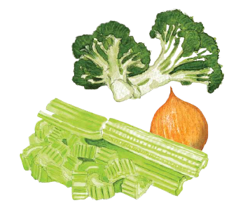

Patê de talos
Ingredientes
- 1 colher (sopa) de óleo
- 1 cebola pequena
- 1 colher (chá) rasa de sal
- Salsa e cebolinha a gosto
- 1 xícara (chá) de talos cozidos (de agrião, espinafre, brócolis etc.)
- ½ xícara (chá) de maionese industrializada
Modo de preparo
Aqueça o óleo e refogue a cebola picada. Acrescente os talos picados e cozidos, a salsa e a cebolinha e deixe refogar. Coloque o sal, deixe esfriar e acrescente a maionese. Bata no liquidificador.
Sugestão:
Ideal para canapés e bolachas salgadas.
